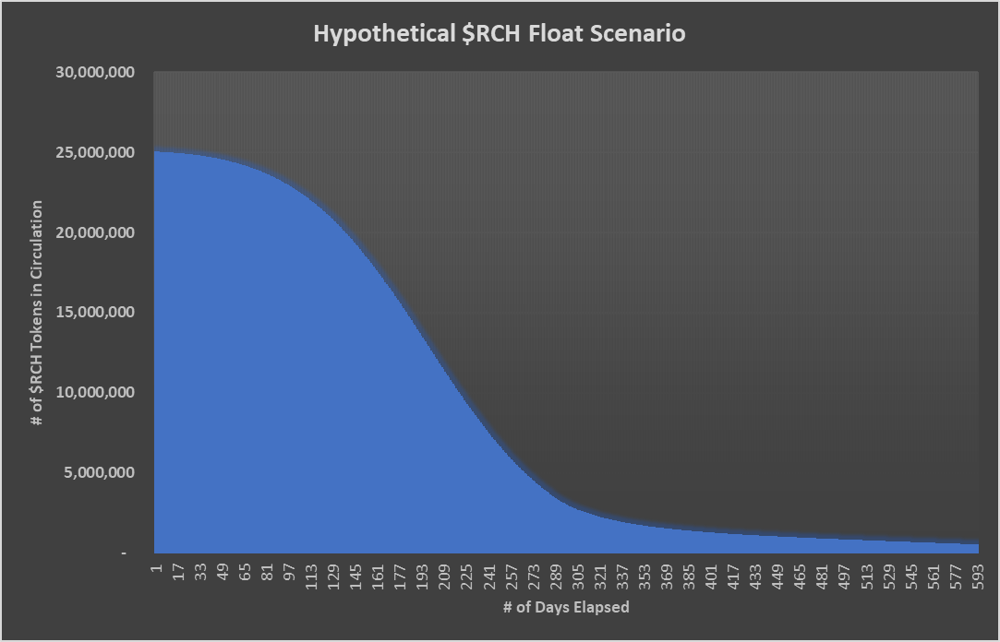
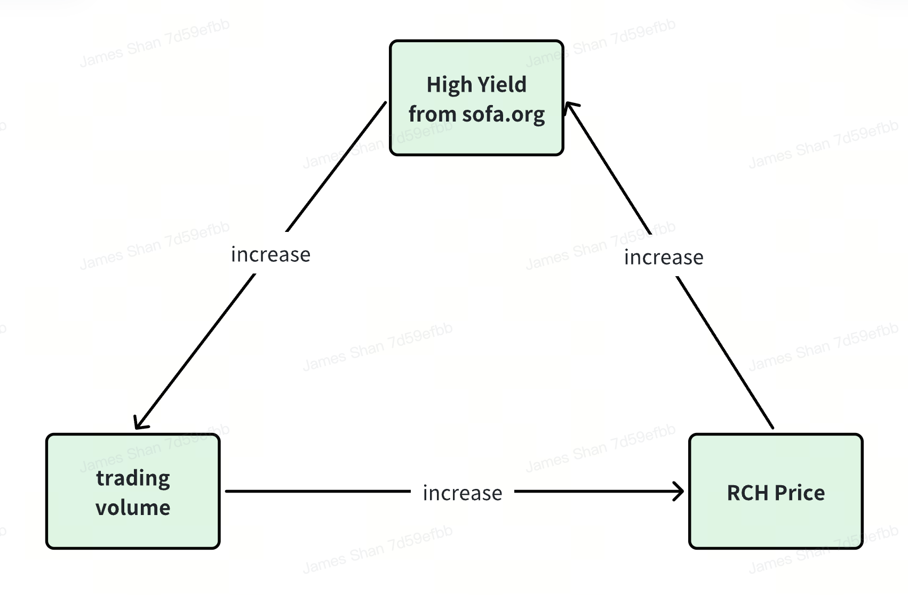
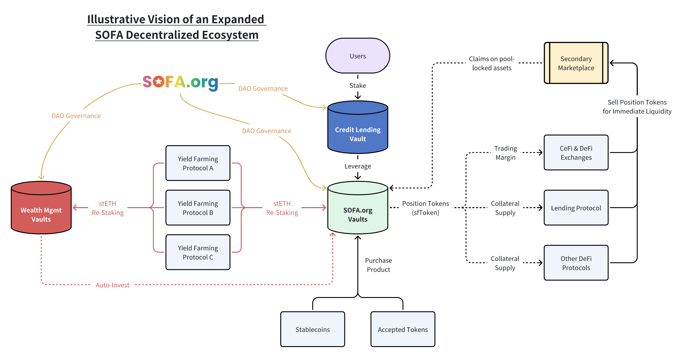

假設性 $RCH 浮動情境 (LP + 累積空投)
基本假設
- 0.02% 協議服務費，第一天協議 TVL 為 1,000,000 USDT，每日增長 2%，每日名義 $RCH 空投 12,500，其中 50% 賣回 LP 池

正向反射性與自我調整的下行修正

由於其通縮供應模型，協議交易的增加應導致 $RCH 價格上升。隨著效用代幣價格的上升，未來空投的價值也會增加，這鼓勵了更多的交易，並為整個生態系統創造了一個正向反饋循環。
另一方面，如果代幣價格因某種原因急劇下跌，基於 USDT 的協議交易費將能夠從每日回購操作中燃燒更多的 $RCH 代幣。這作為一個強大的自我調整機制來穩定代幣價格，直到每日交易能夠趕上以恢復淨供應赤字並重新啟動 $RCH 價格上升趨勢。
無退出流動性拋售
從先前項目的經驗中學習，$RCH 的公平發行機制將消除任何負面的「懸崖式解鎖」影響或內部人流動性拋售，因為在發行時沒有任何一方有權獲得 $RCH。此外，效用代幣的初始流動性被鎖定，貢獻者無法提取，確保無論市場發展如何，流動性都有最低水平。最後，只要協議交易持續進行，這應該對 $RCH 產生淨通縮供應影響，為代幣價格提供非常強勁的長期順風。
無限可擴展的生態系統

未來，任何有志於 DeFi 的項目符合 SOFA.org 標準的都可以申請加入生態系統成為協議夥伴。
加入生態系統的好處
- 由 SOFA.org 推薦為遵循和維護協會去中心化價值和設計的 DeFi 項目，作為快速連接 SOFA 生態系統其他部分的途徑。
- 在更大的 SOFA 生態系統內的交易也有資格獲得每日 $RCH 空投。
加入生態系統的先決條件
- 遵循真正的 DeFi 標準：項目必須符合 SOFA.org 制定的真正 DeFi 標準，支持去中心化使命的持續增長。
- 分配費用以燃燒本地代幣：項目應分配全部或部分交易費用來燃燒 $RCH 代幣，促進通縮機制並加速價值增長給我們忠實的用戶。
- 通過 $SOFA 持有者的集體投票批准：項目必須通過 $SOFA 代幣持有者的集體投票過程獲得批准加入生態系統，作為社區認可的一種形式。
隨著更多協議加入 SOFA.org 生態系統，將有更多的交易費用分配給代幣回購，為我們的代幣持有者創造深遠的收益。同時，我們也將成功地開創了數字資產如何在鏈上結算的新領域，同時提供一個強大的三方解決方案，以減輕 DeFi 和 CeFi 平台之間的對手風險。